Changes in PRIMAP-hist v2.6_final compared to v2.5.1_final for Switzerland
2024-09-24
Johannes Gütschow
Change analysis for Switzerland for PRIMAP-hist v2.6_final compared to v2.5.1_final
Overview over emissions by sector and gas
The following figures show the aggregate national total emissions excluding LULUCF AR6GWP100 for the country reported priority scenario. The dotted linesshow the v2.5.1_final data.
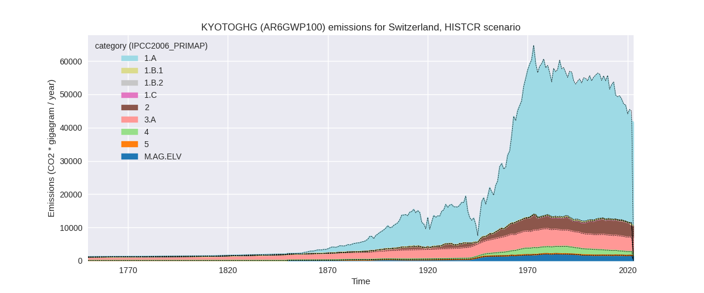
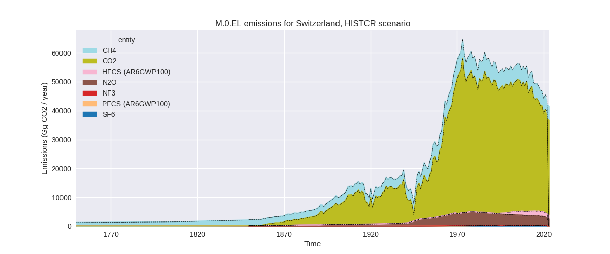
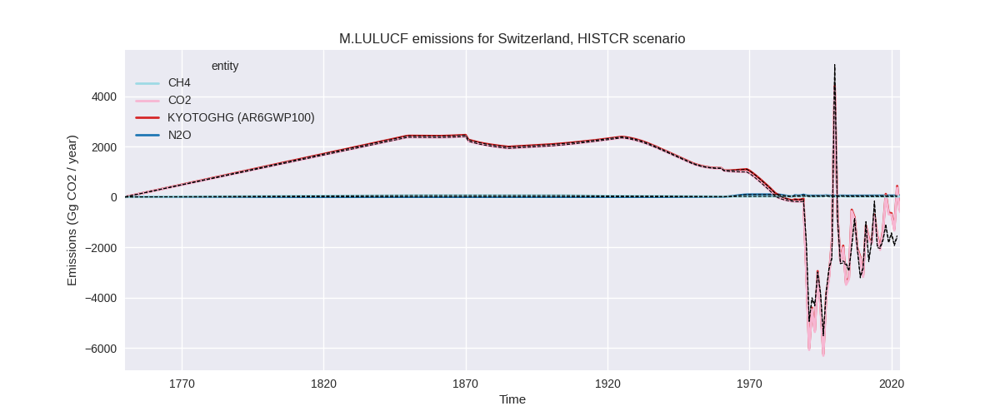
The following figures show the aggregate national total emissions excluding LULUCF AR6GWP100 for the third party priority scenario. The dotted linesshow the v2.5.1_final data.
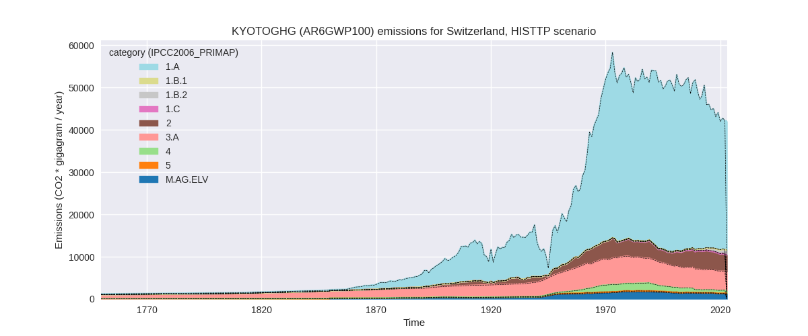
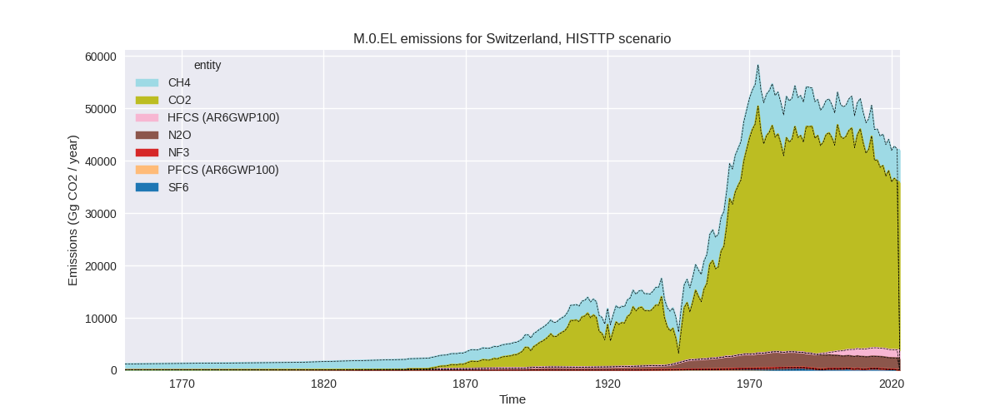
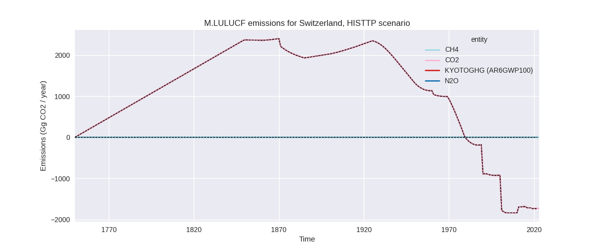
Overview over changes
In the country reported priority scenario we have the following changes for aggregate Kyoto GHG and national total emissions excluding LULUCF (M.0.EL):
- Emissions in 2022 have changed by -6.9%% (-3087.35 Gg CO2 / year)
- Emissions in 1990-2022 have changed by -0.5%% (-285.86 Gg CO2 / year)
In the third party priority scenario we have the following changes for aggregate Kyoto GHG and national total emissions excluding LULUCF (M.0.EL):
- Emissions in 2022 have changed by -0.4%% (-163.10 Gg CO2 / year)
- Emissions in 1990-2022 have changed by -0.2%% (-91.53 Gg CO2 / year)
Most important changes per scenario and time frame
In the country reported priority scenario the following sector-gas combinations have the highest absolute impact on national total KyotoGHG (AR6GWP100) emissions in 2022 (top 5):
- 1: 1.A, CO2 with -2386.43 Gg CO2 / year (-7.2%)
- 2: 2, N2O with -341.56 Gg CO2 / year (-89.8%)
- 3: 1.B.2, CH4 with -182.91 Gg CO2 / year (-81.0%)
- 4: 2, SF6 with -57.88 Gg CO2 / year (-49.2%)
- 5: 2, CO2 with -44.11 Gg CO2 / year (-2.1%)
In the country reported priority scenario the following sector-gas combinations have the highest absolute impact on national total KyotoGHG (AR6GWP100) emissions in 1990-2022 (top 5):
- 1: 1.B.2, CH4 with -224.65 Gg CO2 / year (-74.6%)
- 2: 1.A, CO2 with -51.39 Gg CO2 / year (-0.1%)
- 3: M.AG.ELV, N2O with 26.36 Gg CO2 / year (1.6%)
- 4: 2, CO2 with -22.54 Gg CO2 / year (-1.0%)
- 5: 2, HFCS (AR6GWP100) with -10.60 Gg CO2 / year (-1.0%)
In the third party priority scenario the following sector-gas combinations have the highest absolute impact on national total KyotoGHG (AR6GWP100) emissions in 2022 (top 5):
- 1: 2, CO2 with -68.00 Gg CO2 / year (-2.9%)
- 2: 4, CH4 with -46.25 Gg CO2 / year (-9.1%)
- 3: 1.A, CO2 with -38.07 Gg CO2 / year (-0.1%)
- 4: 2, HFCS (AR6GWP100) with 16.45 Gg CO2 / year (1.0%)
- 5: 2, SF6 with -12.54 Gg CO2 / year (-24.2%)
In the third party priority scenario the following sector-gas combinations have the highest absolute impact on national total KyotoGHG (AR6GWP100) emissions in 1990-2022 (top 5):
- 1: 4, CH4 with -51.79 Gg CO2 / year (-6.2%)
- 2: 2, CO2 with -23.27 Gg CO2 / year (-0.9%)
- 3: 4, N2O with -20.84 Gg CO2 / year (-11.9%)
- 4: 1.A, CO2 with -1.47 Gg CO2 / year (-0.0%)
- 5: 5, CO2 with -1.47 Gg CO2 / year (-10.8%)
Notes on data changes
Here we list notes explaining important emissions changes for the country. ’' means that the following text only applies to the TP time series, while means that it only applies to the CR scenario. Otherwise the note applies to both scenarios.
- We have added EEA 2024 inventory data.
- Energy CO2 is lower in 2022 as EEA data shows an emissions decline which is not present in EI data (CR).
- N2O from chemical industry (2.B) is much lower due to a steep emissions decline for 2022 in EEA data (CR).
- CH4 in 1.B.2 is much lower in EEA 2024 data than in CRF 2023 (CR, 2022 and cumulative emissions) This is likely due to lower emissions estimates from natural gas distribution but as EEA 2024 lacks the detail we don’t know for sure.
Changes by sector and gas
For each scenario and time frame the changes are displayed for all individual sectors and all individual gases. In the sector plot we use aggregate Kyoto GHGs in AR6GWP100. In the gas plot we usenational total emissions without LULUCF. ## country reported scenario
2022
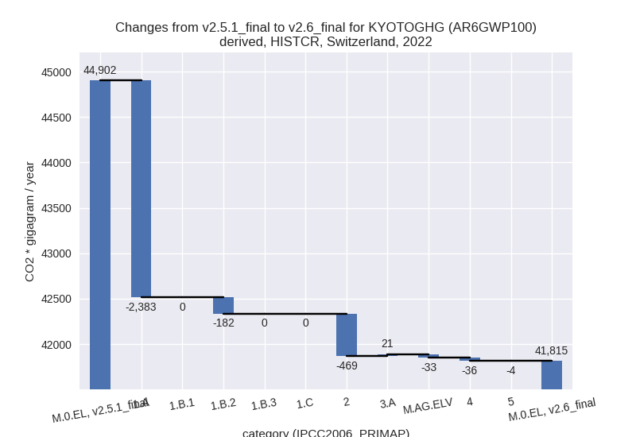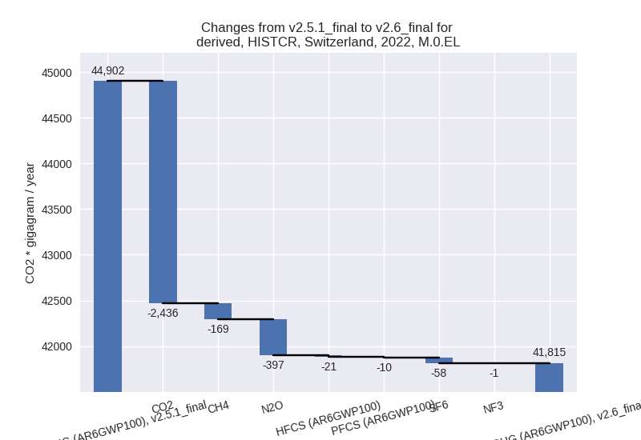
1990-2022
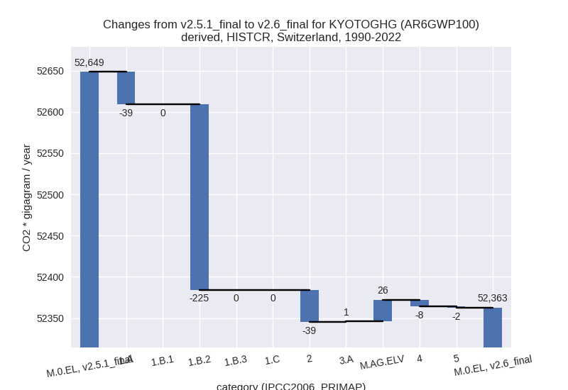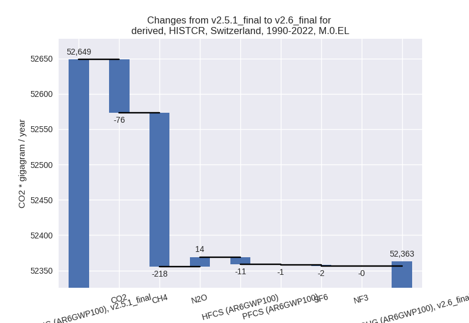
third party scenario
2022
 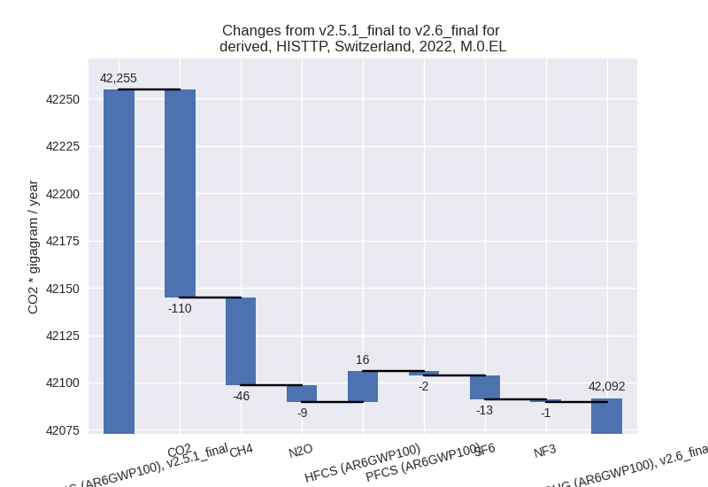
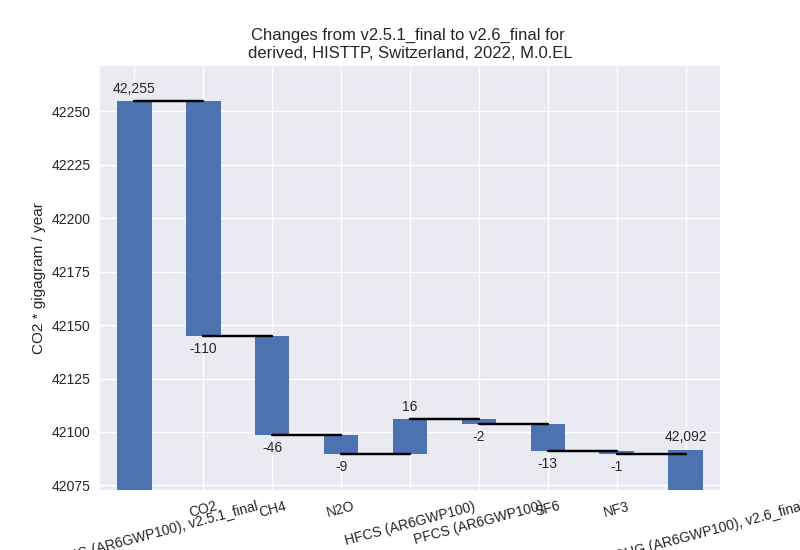
1990-2022
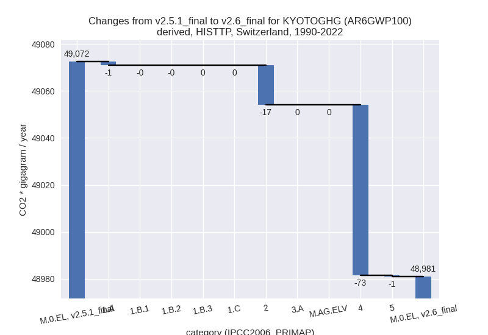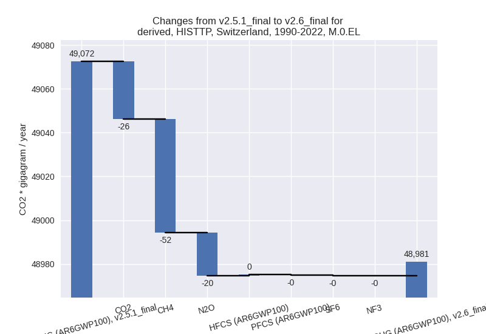
Detailed changes for the scenarios:
country reported scenario (HISTCR):
Most important changes per time frame
For 2022 the following sector-gas combinations have the highest absolute impact on national total KyotoGHG (AR6GWP100) emissions in 2022 (top 5):
- 1: 1.A, CO2 with -2386.43 Gg CO2 / year (-7.2%)
- 2: 2, N2O with -341.56 Gg CO2 / year (-89.8%)
- 3: 1.B.2, CH4 with -182.91 Gg CO2 / year (-81.0%)
- 4: 2, SF6 with -57.88 Gg CO2 / year (-49.2%)
- 5: 2, CO2 with -44.11 Gg CO2 / year (-2.1%)
For 1990-2022 the following sector-gas combinations have the highest absolute impact on national total KyotoGHG (AR6GWP100) emissions in 1990-2022 (top 5):
- 1: 1.B.2, CH4 with -224.65 Gg CO2 / year (-74.6%)
- 2: 1.A, CO2 with -51.39 Gg CO2 / year (-0.1%)
- 3: M.AG.ELV, N2O with 26.36 Gg CO2 / year (1.6%)
- 4: 2, CO2 with -22.54 Gg CO2 / year (-1.0%)
- 5: 2, HFCS (AR6GWP100) with -10.60 Gg CO2 / year (-1.0%)
Changes in the main sectors for aggregate KyotoGHG (AR6GWP100) are
- 1: Total sectoral emissions in 2022 are 31107.88 Gg
CO2 / year which is 74.4% of M.0.EL emissions. 2022 Emissions have
changed by -7.6% (-2565.15 Gg CO2 /
year). 1990-2022 Emissions have changed by -0.7% (-264.13 Gg CO2 / year). For 2022
the changes per gas
are:
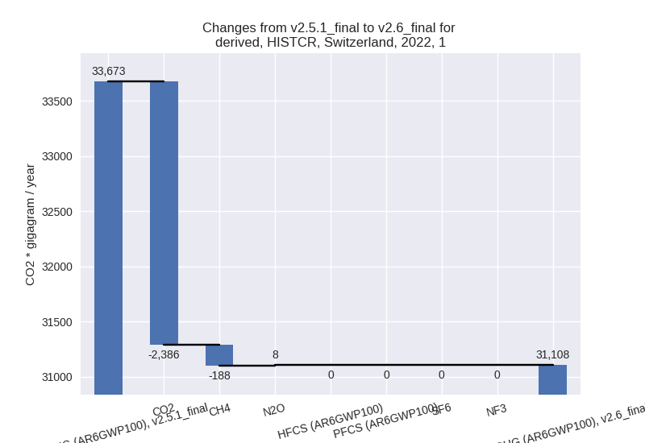
The changes come from the following subsectors:- 1.A: Total sectoral emissions in 2022 are 31043.41
Gg CO2 / year which is 99.8% of category 1 emissions. 2022 Emissions
have changed by -7.1% (-2383.04 Gg
CO2 / year). 1990-2022 Emissions have changed by -0.1% (-39.28 Gg CO2 / year). For 2022 the
changes per gas
are:
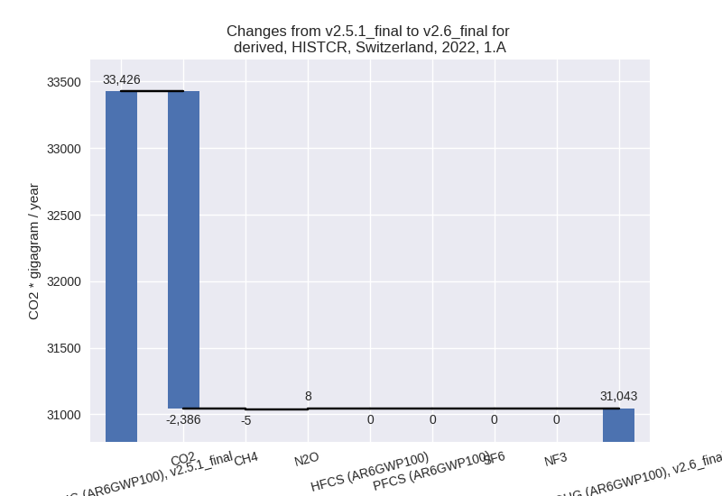
There is no subsector information available in PRIMAP-hist. - 1.B.2: Total sectoral emissions in 2022 are 64.47
Gg CO2 / year which is 0.2% of category 1 emissions. 2022 Emissions have
changed by -73.9% (-182.12 Gg CO2 /
year). 1990-2022 Emissions have changed by -66.3% (-224.85 Gg CO2 / year). For 2022
the changes per gas
are:
For 1990-2022 the changes per gas are:
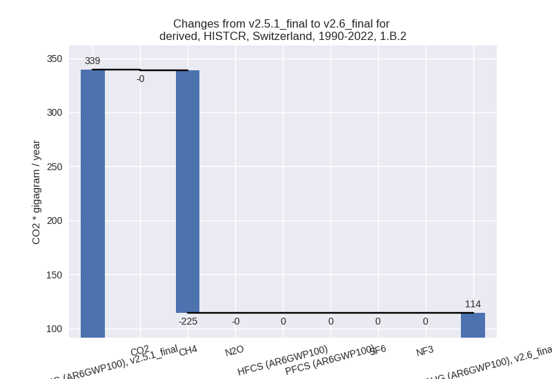
There is no subsector information available in PRIMAP-hist.
- 1.A: Total sectoral emissions in 2022 are 31043.41
Gg CO2 / year which is 99.8% of category 1 emissions. 2022 Emissions
have changed by -7.1% (-2383.04 Gg
CO2 / year). 1990-2022 Emissions have changed by -0.1% (-39.28 Gg CO2 / year). For 2022 the
changes per gas
are:
- 2: Total sectoral emissions in 2022 are 3651.58 Gg
CO2 / year which is 8.7% of M.0.EL emissions. 2022 Emissions have
changed by -11.4% (-469.45 Gg CO2 /
year). 1990-2022 Emissions have changed by -0.9% (-39.28 Gg CO2 / year). For 2022 the
changes per gas
are:
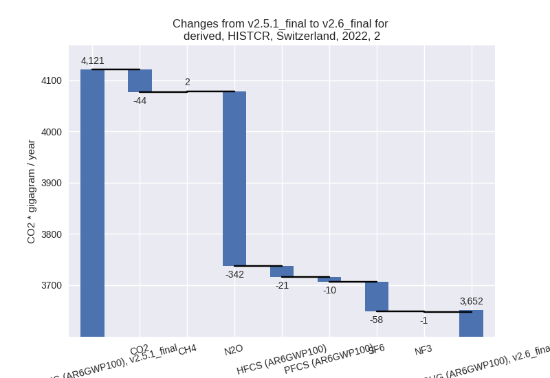 - M.AG: Total sectoral emissions in 2022 are 5921.12 Gg CO2 / year which is 14.2% of M.0.EL emissions. 2022 Emissions have changed by -0.2% (-12.30 Gg CO2 / year). 1990-2022 Emissions have changed by 0.4% (26.97 Gg CO2 / year).
- 4: Total sectoral emissions in 2022 are 1125.47 Gg
CO2 / year which is 2.7% of M.0.EL emissions. 2022 Emissions have
changed by -3.1% (-36.07 Gg CO2 /
year). 1990-2022 Emissions have changed by -0.5% (-7.73 Gg CO2 / year). For 2022 the
changes per gas
are:
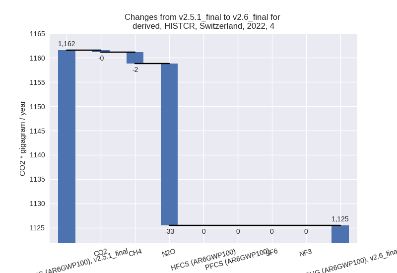 - 5: Total sectoral emissions in 2022 are 9.10 Gg CO2
/ year which is 0.0% of M.0.EL emissions. 2022 Emissions have changed by
-32.5% (-4.38 Gg CO2 / year).
1990-2022 Emissions have changed by -11.2% (-1.68 Gg CO2 / year). For 2022 the
changes per gas
are:
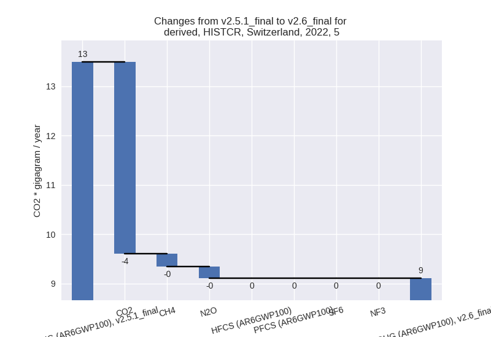
For 1990-2022 the changes per gas are:
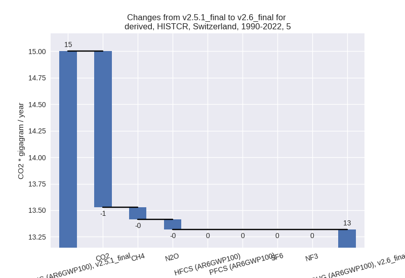
third party scenario (HISTTP):
Most important changes per time frame
For 2022 the following sector-gas combinations have the highest absolute impact on national total KyotoGHG (AR6GWP100) emissions in 2022 (top 5):
- 1: 2, CO2 with -68.00 Gg CO2 / year (-2.9%)
- 2: 4, CH4 with -46.25 Gg CO2 / year (-9.1%)
- 3: 1.A, CO2 with -38.07 Gg CO2 / year (-0.1%)
- 4: 2, HFCS (AR6GWP100) with 16.45 Gg CO2 / year (1.0%)
- 5: 2, SF6 with -12.54 Gg CO2 / year (-24.2%)
For 1990-2022 the following sector-gas combinations have the highest absolute impact on national total KyotoGHG (AR6GWP100) emissions in 1990-2022 (top 5):
- 1: 4, CH4 with -51.79 Gg CO2 / year (-6.2%)
- 2: 2, CO2 with -23.27 Gg CO2 / year (-0.9%)
- 3: 4, N2O with -20.84 Gg CO2 / year (-11.9%)
- 4: 1.A, CO2 with -1.47 Gg CO2 / year (-0.0%)
- 5: 5, CO2 with -1.47 Gg CO2 / year (-10.8%)
Changes in the main sectors for aggregate KyotoGHG (AR6GWP100) are
- 1: Total sectoral emissions in 2022 are 31544.60 Gg CO2 / year which is 74.9% of M.0.EL emissions. 2022 Emissions have changed by -0.1% (-38.07 Gg CO2 / year). 1990-2022 Emissions have changed by -0.0% (-1.53 Gg CO2 / year).
- 2: Total sectoral emissions in 2022 are 4004.52 Gg CO2 / year which is 9.5% of M.0.EL emissions. 2022 Emissions have changed by -1.6% (-65.81 Gg CO2 / year). 1990-2022 Emissions have changed by -0.4% (-16.82 Gg CO2 / year).
- M.AG: Total sectoral emissions in 2022 are 5777.34 Gg CO2 / year which is 13.7% of M.0.EL emissions. 2022 Emissions have changed by 0.0% (0.00 Gg CO2 / year). 1990-2022 Emissions have changed by 0.0% (0.00 Gg CO2 / year).
- 4: Total sectoral emissions in 2022 are 652.76 Gg
CO2 / year which is 1.6% of M.0.EL emissions. 2022 Emissions have
changed by -8.2% (-58.43 Gg CO2 /
year). 1990-2022 Emissions have changed by -7.1% (-72.60 Gg CO2 / year). For 2022 the
changes per gas
are:
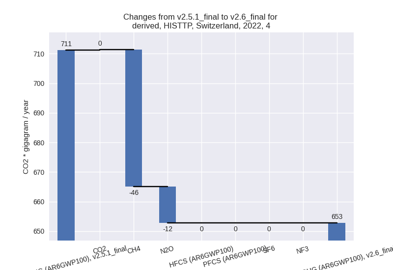
For 1990-2022 the changes per gas are:
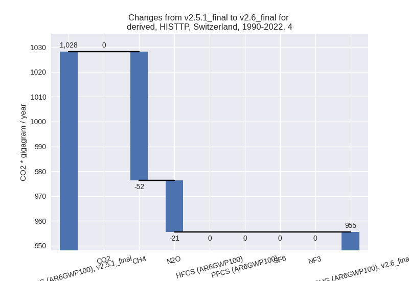 - 5: Total sectoral emissions in 2022 are 112.41 Gg CO2 / year which is 0.3% of M.0.EL emissions. 2022 Emissions have changed by -0.7% (-0.79 Gg CO2 / year). 1990-2022 Emissions have changed by -0.3% (-0.59 Gg CO2 / year).